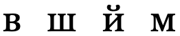
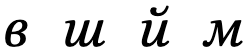
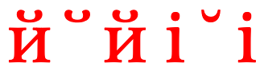

This page gathers basic information about the Cyrillic script and its use for the Russian language. It aims (generally) to provide an overview of the orthography and typographic features, and (specifically) to advise how to write Russian using Unicode.
Phonetic transcriptions on this page should be treated as an approximate guide, only. Many are more phonemic than phonetic, and there may be variations depending on the source of the transcription.
Select part of this sample text to show a list of characters, with links to more details. Change size: 24px
Статья 1 Все люди рождаются свободными и равными в своем достоинстве и правах. Они наделены разумом и совестью и должны поступать в отношении друг друга в духе братства.
Статья 2 Каждый человек должен обладать всеми правами и всеми свободами, провозглашенными настоящей Декларацией, без какого бы то ни было различия, как-то в отношении расы, цвета кожи, пола, языка, религии, политических или иных убеждений, национального или социального происхождения, имущественного, сословного или иного положения. Кроме того, не должно проводиться никакого различия на основе политического, правового или международного статуса страны или территории, к которой человек принадлежит, независимо от того, является ли эта территория независимой, подопечной, несамоуправляющейся или как-либо иначе ограниченной в своем суверенитете.
Usage & history
The Cyrillic script has traditionally been used for writing the Slavic languages, of which Russian is the most widely spoken. During the nineteenth and twentieth centuries, particularly under Soviet rule, it was extended to write over 50 languages throughout Eastern Europe and Asia. With the accession of Bulgaria to the European Union on 1 January 2007, Cyrillic became the third official script of the European Union, As of 2011, around 252 million people in Eurasia use it as the official alphabet for their national languages, with Russia accounting for about half of them.
The script is named in honor of the two Byzantine brothers, Saints Cyril and Methodius, who created the earlier Glagolitic alphabet. Modern scholars believe that Cyrillic was developed and formalized by early disciples of Cyril and Methodius.
Cyrillic is derived from the Greek uncial script, augmented by letters from the older Glagolitic alphabet, including some ligatures. These additional letters were used for Old Church Slavonic sounds not found in Greek, and the Cyrillic script was initially used for writing Old Church Slavonic (also called Old Bulgarian), The script has changed over the intervening centuries to the point that Old Church Slavonic is sometimes considered a separate script.
An orthographic reform implemented by the Russian tsar Peter the Great in 1708 removed a number of obsolete letters to make Russian writing highly phonetic.
Cyrillic is an alphabet. Letters typically represent a consonant or vowel sound. See the table to the right for a brief overview of features for the modern Russian language.
Of the 441 characters in the Unicode Cyrillic blocks, 177 are historic (33%) and 2 are for Lithuanian dialectology. The remaining 262 are just letters – no punctuation, digits, or combining characters. These are all bicameral, which brings the number of distinct modern letters to 131. Although modern Cyrillic text tends to use precomposed forms, rather than combining diacritics separately with base letters, many extended characters are formed by slightly tweaking a set of basic shapes.
Russian text runs left-to-right in horizontal lines.
Words are separated by spaces.
The script is bicameral. The shapes of the upper and lowercase forms are typically the same. There can be a significant difference, however, between regular and cursive/italic shapes for the same character.
Modern Russian has 23 consonant letters, including the hard and soft signs, and й [U+0439 CYRILLIC SMALL LETTER SHORT I], which is a semivowel used to write Russian diphthongs.
There are 10 vowel letters, half of which usually indicate palatalisation of the previous consonant. They may, however, sometimes be used after one of the few consonants that is always hard, and е [U+0435 CYRILLIC SMALL LETTER IE] is commonly used after non-palatalised consonants in loan words.
In the absence of an indicator vowel, the soft sign can be used to indicate palatalisation of a consonant.
Numbers use ASCII digits.
The visual forms of letters don't usually interact.
Character index
The index points to locations where a character is mentioned in this page, and indicates whether it is used by the modern Russian orthography described here.
See also a list of characters in the Cyrillic Unicode blocks not used for the modern Russian orthography, grouped by General Category.
Click on the sounds to reveal locations in this document where they are mentioned.
Phones in a lighter colour are non-native or allophones. Source Wikipedia.
Vowel sounds
Plain vowels
Diphthongs
Russian diphthongs all end in the sound i̯, however they can be analysed either as diphthongs or as vowels followed by j.wp Here, for simplicity, we will take the latter line.
Consonant sounds
labial
dental
alveolar
post-
alveolar
retroflex
palatal
velar
stop
pb pʲbʲ
td tʲdʲ
kɡ kʲɡʲ
affricate
t͡s t͡sʲ
t͡ɕ
fricative
fv fʲvʲ
sz sʲzʲ
ɕːʑː
ʂʐ
xɣ xʲ
nasal
m mʲ
n nʲ
approximant
ɫ lʲ
j
trill/flap
r rʲ
Vowels
Vowel letters
Standard Russian uses 10 vowel letters (20 characters).
This set of plain vowels is normally used after a 'hard' consonant (ie. one that isn't palatalised).
Ыы␣Уу␣Оо␣Ээ␣Аа
The other vowels usually indicate a preceding palatalized (soft) consonant and with the exception of и [U+0438 CYRILLIC SMALL LETTER I] are iotated (pronounced with a preceding j) when written at the beginning of a word or following another vowel.
However, they may (and particularly е [U+0435 CYRILLIC SMALL LETTER IE] in words of foreign origin) sometimes also be used after non-palatalised consonants.wa,#Vowels
Ии␣Юю␣Ее␣Ёё␣Яя
The phonetic sound of the letters varies, particularly between stressed and unstressed vowels (where, for example, о [U+043E CYRILLIC SMALL LETTER O], pronounced o in stressed syllables, is pronounced ʌ or ə). There may also be differences due to the context in which the vowel appears. Click on each letter above for more details, see vowelMappings, or see Wikipedia for much more information.
The semivowel is regarded as a consonant, but is mainly used to create diphthongs, eg.
ино́йприйти́
Diacritics
́␣̈␣̆
́ [U+0301 COMBINING ACUTE ACCENT] is used to indicate where the stress falls in a word for educational materials, dictionaries, and such. The position of the stress is distinctive, and not always predictable, eg. compare
за́мокзамо́к
Rarely, it may be used to specify the stress in uncommon foreign words and in poems with unusual stress used to fit the meter.wa,#Diacritics We use it here for most of the examples.
All 55 of the other combining characters in the Unicode Cyrillic blocks fall under the historical category.
Letter to sound mappings
Given the tendency to alter vowel quality for all vowels in a word other than the one that is stressed, plus the effects of palatalisation, the mapping of letters to actual sounds is somewhat complicated (and in some cases controversial). The following table comes from Wikipedia.wp
Phoneme
Letter
(typically)
Position
Stressed
Reduced
i
и
(Cʲ)V
i
ɪ
ыи
CV
ɨ
u
у
(C)V
u
ʊ
(C)VCʲ
ю
CʲV
ʉ
e
э
VC
ɛ
ɪ
е
CʲV
e
э, е†
CVC
ɛ
ɨ
CVCʲ
e
o
о
(C)V
o
ə, ʌ
(C)VCʲ
ɵ
ё*
CʲV
ɪ
a
а
(C)V
ä
ə, ʌ
(C)VCʲ
я
CʲV
æ
ɪ
* Reduced ⟨ё⟩ is written as ⟨е⟩.
† ⟨е⟩ is used in most loans (except if word-initial) or after ц, ш, ж.
Obsolete Russian vowels
Peter the Great's reform led to the abandonment of these vowel characters.w
Ѫѫ␣Ѧѧ␣Ѭѭ␣Ѩѩ
The Russian orthographic reform of 1918 dropped the following additional vowel letters from the Russian repertoire.w
Іі␣Ѣѣ
Consonants
Consonant letters
Russian uses 20 consonants (40 characters, if you include uppercase and lowercase), plus a hard and soft sign.
Stops
Пп␣Бб␣Тт␣Дд␣Кк␣Гг
Affricates
Цц␣Чч␣Шш␣Щщ
Fricatives
Фф␣Вв␣Сс␣Зз␣Жж␣Хх
Nasals
Мм␣Нн
Liquids
Рр␣Лл
Palatalisation
Most of the consonants can be pronounced with or without palatisation, ie. 'hard' or 'soft', respectively. In principle, this is determines which vowel follows it. Palatalised consonants are generally followed by these vowels: я ё е ю и. The other vowels, а о э у ы, follow hard sounds. See also signs.
The following consonant sounds are always hard:
ж␣ш␣ц
These are always soft:
щ␣ч
Palatalisation is phonemically significant, eg. compare братьбрат
Hard and soft signs
Ъъ␣Ьь
The hard sign slightly separates a non-palatised consonant sound from a following iotated vowel. In modern Russian it is mostly used to separate a prefix from a root.w
The soft sign can be used in two ways.
In most positions it indicates that the preceding consonant is palatalized. Any following vowel is iotated. It is phonemically significant, eg.
червькольну́ть
After root-final consonants ч щ (always soft) or ж ш ц (always hard), the soft sign doesn't alter pronunciation but has a grammatical meaning,wa,#Non-vocalized_letters eg. compare тушьтуш
Prior to the 1918 reforms, every word ending in a consonant had to be followed by a hard or soft sign. That is no longer the case, and the hard sign is now the least common letter in the Russian alphabet.wa,#Frequency
Obsolete Russian consonants
Around 1750, after Peter the Great's orthographic reform, the following consonants fell into disuse in Russian.w
Ѕѕ␣Ѯѯ␣Ѱѱ
After the subsequent orthographic reform of 1918, the following additional consonants were removed from the Russian repertoirew, although you can still find them used in Church Slavonic and some other languages.
This section brings together information about the following topics:
writing styles;
cursive text;
context-based shaping;
context-based positioning;
baselines, line height, etc.;
font styles;
case & other character transforms.
The Cyrillic script is not cursive, and involves no significant context-based shaping or positioning. Nor are there significant issues around baselines or inline alignment.
Font styles
Cyrillic doesn't normally have any of the changeability of complex scripts. Characters are typically separate and self-contained. However, there can be a significant difference in shape between regular and italic/cursive font shapes for the same character.


Conservative transformations between regular and italic.
More radical transformations between regular and italic.
Note in particular the italic form of т in the figure just above, which looks similar to the italic form of м shown in the previous figure.
The shapes of the italic forms can also vary by language.w
The shape of the breve sign in Cyrillic is different from that used for Latin text.s A font such as Brill can detect the appropriate shape from the adjacent characters.

̆ [U+0306 COMBINING BREVE] between cyrillic and latin characters changes shape in the Brill font.
Transforming characters
Russian is bicameral, and applications may need to enable transforms to allow the user to switch between cases.
Although most sources recommend the use of different quote marks for embedded quotes, Russian rules also allow use of the same quotation marks, and if inner and outer quotation marks fall together, then one of them should be omitted.wq,#Belarusian,_Russian,_and_Ukrainian
Пушкин писал Дельвигу: «Жду „Цыганов“ и тотчас тисну».
Russian quotation marks.
For dialogue, the quotation dash is commonly used to introduce the spoken text, but also to terminate it before identifying the speaker. fig_quote_dashes uses — [U+2014 EM DASH] with spaces around it for this.wq,#Belarusian,_Russian,_and_Ukrainian
— Кто там?
— Это я, почтальон Печкин, — последовал ответ. — Принёс заметку про вашего мальчика.
Quotation dashes used in Russian dialogue.
Emphasis
tbd
Abbreviation, ellipsis & repetition
tbd
Inline notes & annotations
tbd
Other inline ranges
tbd
Other punctuation
CLDR lists the following additional punctuation marks.
§␣‐␣–␣…
Line & paragraph layout
Line breaking & hyphenation
Spaces between words provide the primary line break opportunities.u
Justification is done, principally, by adjusting the space between words.
Letter spacing
tbd
Counters, lists, etc.
You can experiment with counter styles using the Counter styles converter. Patterns for using these styles in CSS can be found in Ready-made Counter Styles, and we use the names of those patterns here to refer to the various styles.
The modern Russian orthography uses 4 alphabetic styles, besides the ASCII decimal numeric style.
Alphabetic
The lower-russian alphabetic style uses these letters.
The default list style uses a full stop + space as a suffix.
Examples:
а. б. в. г. д.
Separator for Russian list counters.
Styling initials
tbd
Page & book layout
This section is for any features that are specific to Cyrillic and that relate to the following topics:
general page layout & progression;
grids & tables;
notes, footnotes, etc;
forms & user interaction;
page numbering, running headers, etc.
Character lists
Version 13.0 of the Unicode Standard has the following blocks dedicated to the Cyrillic script (numbers in lists are non-ASCII only):
Cyrillic248 letters, 7 marks, 1 symbol : total 256